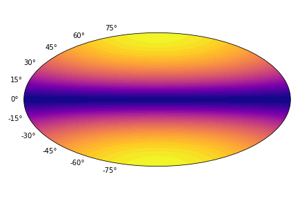

Magpies package documentation¶
Magpies (Magnetar polarisation, intensity and spectra) Python package to convert magnetic and thermal maps into synthetic X-ray observations. These synthtic observations include the thermal lightcurves for arbitrary orientation of neutron star, spectra and polarisation.
The package requires surface magnetic and thermal maps. In the case of simple dipole configuration the surface thermal map can be created by using the Atmos collection of numerical fits.
Below we show simple example of the usage. The more advance examples are provided in tutorial section.
Simple examples¶
In order to work with the package we recommend to import the following blocks and packages:
from magpies import *
from atmos import *
import numpy as np
from math import *
First we specify mass and radius of neutron star. These parameters will enter nearly every function because they enter the compactness parameter and affect how light is emitted and propagated in close vicinity of the neutron star. Following the usual practise of the field mass is specified in units of solar mass and radius is in km. It is also useful to choose polar magnetic field Bp [G] and temperature in deep layers of neutron stars Tb [K].
# Radius and mass of neutron star
Rns = 12 ## km
Mns = 1.4 ## M_solar
Tb = pow(10, 7.1730) ## K
Bp = 1e11 ## G
Now we compute free fall acceleration and initialise the iron atmosphere following fit from Potekhin et al. (2003) article for dipolar magnetic field.
g14c = g14 (Rns, Mns) ## computing the free fall acceleration
atm_iron_2003 = NS_atmosphere ('Potekhin_2003_iron', g14c, Tb, Bp)
atm_iron_2003.describe ()
The function g14 is a part of Magpies library while NS_atmosphere is a class from the Atmos library. The method describe simply provide more details about the fit and relevant literature reference.
Further we create a latitude and longitude grid where the temperatures are computed.
theta = np.linspace (0, pi, 100) ## theta coordinates
phi = np.linspace (0, 2*pi, 99) ## phi coordinates
theta1, phi1 = np.meshgrid (theta, phi)
Ts = atm_iron_2003.Ts (theta1)
The method Ts creates array with temperatures following the prescribed compactness and deep crust temperature. We can plot the surface thermal map in Aitoff projection using standard matplotlib tools:
import matplotlib.pyplot as plt
frame = plt.subplot(111, projection='aitoff')
bc = plt.contourf (phi-pi, -(theta-pi/2), Ts.T, 40)
frame.axes.xaxis.set_ticklabels([])
plt.tight_layout()
We normally transpose the temperature array using numpy method .T. The result is shown below.
Contents: